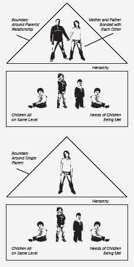
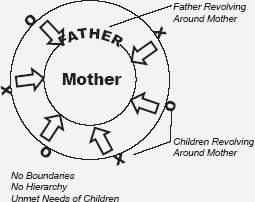

THE REST OF THE NARCISSISTIC NEST
The narcissistic family often resembles the proverbial shiny red apple with a worm inside. It looks great, until you bite into it and discover the worm. The rest of the apple may be just fine but you’ve lost your appetite.
—Stephanie Donaldson-Pressman and Robert Pressman, The Narcissistic Family1
The family with a narcissistic mother operates according to an unspoken set of rules. Children learn to live with those rules, but they never stop being confused and pained by them, for these rules block children’s emotional access to their parents. They are basically invisible—not heard, seen, and nurtured. Tragically, conversely, this set of rules allows the parents to have no boundaries with the children and to use and abuse them as they see fit. Sounds awful, doesn’t it?
Where Is Daddy?
“Daddy, why didn’t you protect me? Where were you when I needed you? Why did you always have to stick up for Mom? What about me?”
These exclamations came from Marcy when we were doing an “empty chair” exercise in therapy. She imagined her father in the empty chair, and talked to him about the family and how it hurt her to be so alone and unloved. Her questions are among those commonly put to fathers by daughters of narcissistic mothers: Where were you?
From my research and experience, the answer is clear: Father is revolving around Mother like a planet around the sun. The narcissist needs to be married to a spouse who will allow her to be at the center of all the action. That is how it has to be if the marriage is to survive. In the family drama, the narcissist is the star, and her spouse takes a supporting role.
A man gets himself into this situation for many reasons, but for our discussion the most pertinent point is that he is the kind of person who accepts this behavior from his spouse and, most of the time, enables her. Perhaps he doesn’t always want to, but he does, because he has learned over time that this is what works with her. Because the father focuses on his wife, his pact with the mother can make him look narcissistic too. He is unable to attend to the needs of his daughter.
This unspoken agreement between parents who share a narcissistic nest is strong and impenetrable to anyone, but especially a daughter, who is seen as competition by the mother. Obviously, Carmen had gained insight from her significant recovery work, but even so, the pain of this memory still brought her to tears. Tragically, parental denial is what keeps the family together for better or worse, and many families do choose not to confront their problems even though they hurt their children. Someday Carmen will be able to tell this story and not feel the pain that was so present that day. Though she is unlikely to be able to change her parents’ relationship, she can lessen its effect on her and her life.
Modeling a healthy love relationship is one of the most important things that parents do. Children who grow up with an unhealthy model are more likely to have some difficulty with love relationships as adults. Children learn far more from what they see parents do than from anything parents preach to them. In part 2, we look at the love relationships of daughters of narcissistic mothers and discuss the many effects of unhealthy parental relationships.
The emotional health of daughters of narcissistic mothers is in effect sacrificed so that their father can keep the peace with his wife. A daughter’s first steps in recovery involve voicing the devastating feelings of vulnerability and helplessness this generates.
Most daughters report that if they did have good relationships with their fathers, their mothers were intensely jealous of them. Candace tells a heartrending story about the period when her father was dying of Parkinson’s disease. “Daddy was lying on the bed in the hospital and I was lying next to him. It was truly the last hours of his life. Mom got mad that I was that close to him and asked me to move, and she then took my place next to Dad. It was sad to me because it felt like he was the only person who really loved me. Years later, we were chatting about family dynamics, and Mom informed me that she had to adjust the financial inheritance from Dad. She told me she gave me less than the other kids because I got so much from Dad when he was alive.”
Many girls discover that when alone with their fathers, they were able to connect on a different and deeper level and discover their father’s capacity to love them. Even in small doses, this kind of nurturing made a difference.
What About the Brothers?
Boys seem to have a different kind of relationship with Mother. Just about every daughter of a narcissistic mother has reported to me that her brother or brothers were better liked and more favored than she or her sisters were. Daughters consistently report how hurtful this has been. Typically, the mother appears not to notice the imbalance, or if confronted, denies it, but it does make some sense. Her sons are not threatening to her in relation to the father as another girl or woman is, because the boys are not as much an extension of her as is a daughter.
An exception to this can occur when the brother gets married and brings a daughter-in-law into the equation, who can begin to feel the brunt of Mother’s jealousy. In Mom’s eyes, she’s a competitor and the two of them may compete for the son’s attention. His mother may have been the center of his life before, but his new bride steps into that role. Mother should take a backseat, which is virtually impossible for her. My heart always aches for the wives of men with narcissistic mothers. They don’t really know what they are getting into.
It has been surprising to me that most of the daughters I have interviewed or treated have not felt intense resentment toward their brothers. Most of them are grateful that the brothers are getting some maternal attention even if they themselves did not receive it. Some, of course, do feel resentful, and that makes sense. It seems to help the daughter if her brothers can break out of their own denial to see the real problems between their mother and sister. The daughter can then feel some validation from her brother.
The Sisters Extreme
When two daughters are being raised by the same narcissistic mother, I found that, more times than not, they take on very different roles. Both girls internalize the same message that they are valued for what they do, rather than who they are, but they behave in opposite ways. One sister may internalize the message and say, “Okay, I will show you what I can do and how worthy I am” and become an overachiever and a perfectionist. The other sister may internalize this message of inferiority and give up, feeling that she can’t make the grade anyway; she becomes an underachiever or engages in some kind of lifelong self-sabotage. We will explore this phenomenon more in Part Two when we discuss life patterns of daughters of narcissistic mothers. The most important part of this to remember is that even though the external landscapes I describe seem like polar opposites, the internal landscapes are strikingly similar. In other words, the lifestyles of the women may appear quite different, as the high-achieving daughter will look more successful on the outside, but on the inside, both sisters hear the same negative, internalized messages and struggle emotionally. If there is only one girl in the family, she tends to take one of the polar extremes and become either high-achieving or self-sabotaging.
What causes a daughter to take the high-achieving path versus the self-sabotaging path? I have wondered a lot about this. According to my clinical study, the high-achieving daughter usually had someone special in her life who gave her unconditional love and support, typically the father, an aunt, grandmother, or teacher. The self-sabotaging daughter either had no one to nurture her or had only limited access to an adult who served that role during her childhood.
My sister and I took extreme polar opposite paths, perhaps because, when my sister was very young, we moved away from our grandmother, who was a loving presence for me in my early years, offering encouragement and nurturing. My sister missed this special loving connection with our grandmother and has struggled more in certain areas of her life than I. But we have both definitely fought with the internal critical messages instilled in us.
Daughters of narcissistic mothers seem to relate to extremes in all aspects of their lives and seem overly tolerant of aberrant and unusual behavior, which of course their mothers often exhibited. I even thought at one point that the title of this book might be Women of Extremes. A quick overview of what we have learned so far exhibits the extremes that daughters of narcissistic mothers have learned to live with:
The Shiny Red Apple with the Worm Inside
Narcissistic families are disconnected emotionally. They may appear solid on the exterior, but authentic communication and connections between the members rarely take place because the parents in this family are focused on themselves. They expect the children to react to their needs, instead of the other way around, as in a healthy family. In this dysfunctional system, adults do not deal with real feelings, and therefore do not meet the emotional needs of the children.
In a healthy family, the parents are emotionally connected, happy with each other, in control of the family, and at the top of a hierarchy.2 Their job is to take care of the children, who look up to them for support and protection. The parents shine love down on the children and strive to meet their needs physically, emotionally, intellectually, and spiritually. A diagram of the healthy family, adapted from a structural family therapy model, looks like this:

Healthy Family Model
In unhealthy families, this hierarchy becomes skewed, and the children end up taking care of the parents. In a family with a narcissistic mother, everybody attends to the mother, and other family members’ needs are not met. In the narcissistic family the mother is at the center of the system with the rest of the family revolving around her, like the planets revolving around the sun, as in this diagram, below:

Family with Narcissistic Mother
The diagram displays Mother’s self-absorption and Father’s pact to take care of her. The unspoken rule in these families is that they do not discuss this dynamic and it becomes a family secret. In order to maintain the peace, the children have to keep quiet and not rock the boat. They fear abandonment, which causes them to mask their real feelings and pretend that everything is okay—a survival mechanism. In doing so, they do not learn to express or even be in touch with their feelings, and they are thus set up for many interpersonal difficulties later on in life.
When children can’t rely on their parents to meet their needs, they cannot develop a sense of safety, trust, or confidence. Trust is a colossal development issue. Without the learning of trust in our early years, we are set up to have a major handicap with believing in ourselves and feeling safe in intimate connections. Daughters who grew up in narcissistic families uniformly report a lack of confidence in their own decision making as well as difficulty with assuredness in their love relationships. In the recovery section of this book, we will examine what can be done about this void in development. It is important to understand, however, that resolving trust complications will be a lifelong recovery task.
Oftentimes when Mother is narcissistic, she may be able to do some of the earlier nurturing because she has control of the infant and small child and can mold the child to her wishes. But as the child grows older and develops a mind of her own, the mother loses control and no longer has the same kind of power. This causes the mother to begin her demeaning, critical behavior with the child, in hopes of regaining that control, which is crazy-making for the daughter. Even if she learned a modicum of trust as an infant, she begins to unlearn it as she grows older. As she makes natural, reasonable demands on her mother, who is unable to meet them, the mother becomes resentful and threatened, and projects her inadequacies onto the daughter. She begins to focus on the daughter’s failings, rather than on her own limited ability to parent effectively.
You may remember that the characteristics of the narcissistic mother in chapter 1 included a sense of entitlement. This means the narcissist thinks she deserves the best, the most important treatment, being the first in line, being treated with extraordinary efforts, and so on. It also means that her daughter will not be able to have a sense of entitlement, because there is never room for both. Adult feelings of entitlement are unhealthy and dysfunctional, yet as small, helpless, dependent children we are entitled to be cared for. Every child deserves to have someone in her life who is irrationally crazy about her! We gradually grow out of this entitlement and dependency and learn to take care of and rely on ourselves emotionally, which is a sign of stable mental health.
In order to take good care of ourselves as we move through life, girls need to develop sound boundaries between themselves and others. They also need to be able to state what they need in relationships. The daughter of a narcissistic mother does not get to do this, particularly if those needs interfere with what Mother wants. This then causes the daughter to repress her feelings and needs, deny herself, and learn to be fake. Without healthy boundaries, all relationships become skewed in some way.
Setting healthy boundaries requires direct statements and clear communication. Narcissistic families commonly have a skewed, ineffective communication style called “triangulation.” Instead of the mother talking to the daughter, the mother may express her thoughts and feelings—usually negative and criticizing—to another family member in the hope that he or she will tell the daughter. Then the mother can deny that she said it, although the message somehow got out there anyway. This triangulation in communication is passive-aggressive and is an expression of the sentiment “I will get you back, but not directly to your face.” Many families, unfortunately, communicate in this dysfunctional manner, but narcissistic families are the poster example.
In recovery you will learn to say it like it is. No more pretense, no more facade, no more inauthentic representations of ourselves.
Like a shiny red apple with a worm inside, the narcissistic family hides profound pain. To understand how these relationship dynamics set up the daughter to unconsciously create unhealthy life patterns, we have to discuss further the concern that the narcissistic family has about its image. “It’s all about Mom” and “It’s all about image” are its mottoes.